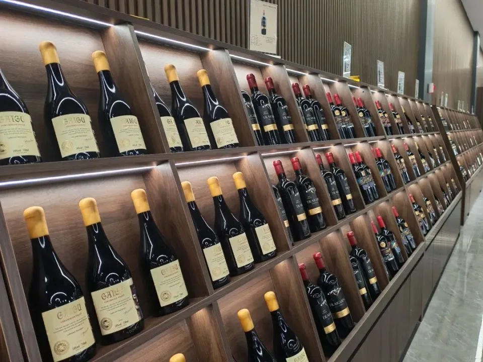

买全球 品世界 醉侨乡-以侨为媒，明溪撬动“商贸+文旅”大市场
Mingxi Leverages “Overseas Chinese Ties” to Unlock the Vast “Commerce & Cultural Tourism” Market

中文原文
夏秋交替的夜晚，暑气渐渐消退。在明溪侨乡葡萄酒文化小镇，一场融合国潮风尚、时代律动与未来幻想的沉浸式文旅盛宴在灯光与夜色中精彩上演，红酒品鉴、特色小吃、欧洲商品等20多个摊位在此摆开，现场热闹非凡。
闽西北山区小县明溪，素有“福建内陆新侨乡”“八闽旅欧第一县”之称，“侨”是其鲜明的特质。目前，明溪在海外人口达1.7万人，侨眷5万余人，占全县总人口一半以上。近年来，明溪大力实施“三侨回归”工程，“引侨资、汇侨智、聚侨力”，以精准培育为抓手，大力发展欧洲进口商贸业态，让游客在明溪体验“买全球”的便捷与欢愉。
今年以来，明溪依托侨乡葡萄酒文化小镇特色资源，探索“商贸＋文旅”的跨界融合，通过“以商带旅、以旅促商”的互动模式，不断释放侨乡新活力。
小县城链全球
随处可见的欧洲元素，是明溪大街上的独特风景。8月13日上午，步入欧侨广场的“欧品购”示范店，进口葡萄酒、咖啡、日化用品、母婴用品……来自全球各地的各类商品映入眼帘。
“爸妈每次从意大利回来，都会给我们带些护手霜、巧克力之类的欧洲商品。”罗娟是土生土长的明溪人，也是当地为数众多的侨属之一，“而今，在明溪的欧洲商品超市，这些都能买到。”
“我们这里有来自近50个国家的产品，有越南的咖啡、俄罗斯的食品、意大利的日化品等。很多产品都是明溪人平常习惯日用的。”欧品购示范店店长叶爱华说。
近年来，为助力欧品购区域公共品牌建设，明溪县积极实施侨力侨资侨智“三侨回归”工程，出台扶持华侨回归兴业政策，完善侨胞返乡创业服务保障机制。此外，当地还成立明溪县侨乡进出口贸易有限公司，建设明溪县公用型保税仓库，提供进口商品采购、清关报关、保税仓储等服务，致力建设三明市融通内外的重要窗口。
“侨”是明溪的商贸主力。“通过‘侨’力量，目前明溪正在打造闽西北及赣南地区最大的进口商品集散中心。”明溪县工信局副局长、商务局局长苏荣斌说，此外，去年明溪县还建成三明市首个公用型保税仓，创新推出“半年免租+全链条服务”模式，打通了从海外直采到终端销售的全流程通路。为持续优化营商环境，明溪还出台入驻补贴、店招奖励、采销激励等一揽子扶持政策，全方位助力企业发展。
截至目前，明溪已培育42家侨资企业，吸引项目投资超20亿元。葡萄酒文化小镇的橱窗里，倒映着“小县城链全球”的梦想。
好商品火出圈
眼下，在明溪，不仅线下的欧洲进口商品门店风生水起，线上的电商直播也逐步壮大。
“我们直播间所有产品都保证欧洲原装进口，请大家放心购买。”8月13日下午，在欧起航进口商品中心的直播间内，主播正在直播售卖欧洲进口美妆。
占地两万多平方米的欧起航进口商品中心，一共5层楼，不仅有进口商超，还拥有十几个直播间。
“我们现在主营的类目分为两块，一块是线上直播间，一块是线下商品中心。”欧起航进口商品中心负责人张浩告诉记者，欧起航以线上直播起步，目前正以线上带动线下，越来越多客人来到商品中心线下选购。去年，线上线下营业额合计超过1亿元。
“我们有自己的进口链和销售链，可以拿到相对低的采购价，因此，我们的商品价格比国内专柜要便宜不少。”在线下的商超里，不仅有大牌首饰美妆，还有很多小众商品，例如巴基斯坦的粉盐、匈牙利的果酒、希腊的果汁等。
近日，2025年“侨家乐・福建省华侨美食文化交流活动明溪专场”在明溪举办，活动期间吸引游客2000多人次。在持续近一周的夏日狂欢中，葡萄酒音乐会、侨乡美食集市、红酒品鉴会、订购会等系列活动轮番上演，不仅为明溪的夜经济注入别样活力，也将明溪“让世界微醺”的邀请传遍省内外。
活动现场，欧品购区域公共品牌正式发布。早在2022年，欧品购首家示范店、欧起航电商直播基地等商家已和市民、游客见面。现在，明溪欧品购已经开到三明市区及龙岩长汀、江西石城等地。
在美食文化交流活动的红酒品鉴会环节，康莱德酒庄庄主Francesco先生表示，中国和意大利都拥有深厚的文化底蕴，葡萄酒正是连接两种文化的绝佳载体。拉维吉雅酒庄庄主柯劳迪-萨拉罗先生动情地说：“每次来到明溪都让我倍感亲切，这里的人、食物和茶都让我想起家乡。”当晚的订购会上，3家海外酒庄与明溪侨乡进出口贸易有限公司签下长期合作协议。
目前，明溪的欧洲原瓶原装进口葡萄酒已经成为当地的拳头产品，活动现场达成了200万元的葡萄酒订单。
来自泉州的经销商兰宝珍说：“往年要去意大利选酒，光差旅费就要十几万元。现在保税仓就在明溪，单瓶成本大幅下降，生意好做多了。”
商旅跨界融合
今年以来，明溪不断探索“商贸＋文旅”的融合，让游客来明溪从“买商品”升级为“品文化、享服务”。
音乐、夜跑、美酒、美食……8月8日晚，明溪县侨乡葡萄酒文化小镇流光溢彩、热闹非凡。明溪县文旅局今年推出的“侨乡田园欢歌”第八场——“荧光夜色·律动城关”夜跑活动在此展开，现场不仅可以观看歌舞表演、参加夜跑活动，还可以品美食、买进口商品，为现场游客带来一场夏夜视觉、听觉与情感的多重享受。
今年，明溪持续助力“商贸+文旅”的深度融合，年初落地侨乡葡萄酒文化小镇、欧洲风情街等特色项目，“侨乡田园欢歌”系列活动也慢慢形成常态化文旅品牌，欧品购、欧起航等平台与县域文旅资源深度融合，不断构建起“以商带旅、以旅促商”的良性循环。
数据显示，今年上半年，明溪旅游人数78.40万人次，同比增长11.3%；游客旅游花费6.82亿元，同比增长13.7%。
“接下来，我们将继续围绕侨乡葡萄酒文化小镇这一特色资源，打造欧洲微型之窗，预计今年10月份完工，希望可以吸引更多游客前来明溪打卡。”明溪县旅游发展中心副主任曹勇金说。
English translation
As summer transitions to autumn, the evening heat gradually fades. At Mingxi Qiaoxiang Wine Culture Town, an immersive cultural tourism feast blending national trend styles, contemporary rhythms, and futuristic vibes unfolds brilliantly under the lights and night sky. Offering wine tastings, local snacks, and European products, over 20 stalls create a bustling atmosphere.
A small mountainous county in northwestern Fujian, Mingxi is known as “Fujian’s New Inland Hometown of Overseas Chinese” and “the No.1 County in Fujian for Travel to Europe”. Overseas Chinese connections are its defining trait. Currently, 17,000 people from Mingxi live abroad, with more than 50,000 overseas Chinese relatives, accounting for over half of the county’s total population. In recent years, Mingxi has vigorously implemented the “Three Overseas Chinese Returns Project,” aiming to attract overseas Chinese capital, pool their wisdom and gather their strength. Taking targeted cultivation as the key, the county has vigorously developed European imported trade and business formats, enabling tourists to experience the convenience and joy of “buying globally” in Mingxi.
Since the start of this year, leveraging the distinctive resources of the Overseas Chinese Hometown Wine Culture Town, Mingxi has explored the integrated development of Commerce & Cultural Tourism. By following the interactive approach of “driving tourism with commerce and boosting commerce with tourism”, the county has continued to unlock new vitality in its overseas Chinese community.
A Small County Connected to the Globe
Ubiquitous European elements create a distinctive sight on Mingxi’s streets.
On the morning of August 13, visitors stepping into the Contro-commerciale Europa flagship store at Ouqiao Plaza are greeted by a wide array of global imports: fine wine, coffee, daily necessities, and maternity and baby products.
“My parents always bring back European items like hand cream and chocolate when they return from Italy,” said Luo Juan, a native of Mingxi and one of the many local overseas Chinese relatives. “Now, I can find all these in Mingxi’s European product supermarkets.”
“We have products from nearly 50 countries, such as Vietnamese coffee, Russian food, Italian daily chemicals, etc. Many of these are daily necessities that Mingxi locals are used to,” noted Ye Aihua, manager of the Contro-commerciale Europa flagship store.
In recent years, to support the development of the regional public brand Contro-commerciale Europa, Mingxi has actively implemented the "Three Overseas Chinese Returns" initiative to attract overseas Chinese capital, talent and strength. It has rolled out policies to support overseas Chinese in starting businesses and improved the service and support mechanism for their entrepreneurship. In addition, the county established Mingxi Qiaoxiang Import and Export Trade Co., Ltd. and built a public bonded warehouse, offering services including imported goods procurement, customs declaration and clearance, and bonded warehousing. It is committed to becoming an important gateway for Sanming to integrate domestic and international markets.
“Overseas Chinese communities serve as the backbone of commerce in Mingxi,” said Su Rongbin, Deputy Director of the Mingxi County Bureau of Industry and Information Technology and Director of the County Bureau of Commerce.
“With the strength of overseas Chinese, Mingxi is now building the largest imported goods distribution center in northwestern Fujian and southern Jiangxi. Last year, the county also completed Sanming’s first public bonded warehouse and rolled out an innovative model of ‘six-month rent exemption plus full-chain services’, opening up the complete workflow from overseas direct sourcing to final sales.”
To further improve the business environment, Mingxi has introduced a full package of supportive policies, including settlement subsidies, storefront sign rewards and procurement-sales incentives, to comprehensively boost the growth of local enterprises.
To date, Mingxi has fostered 42 overseas Chinese-invested enterprises, attracting over 2 billion yuan in project investment. The display windows of the Overseas Chinese Hometown Wine Culture Town reflect the dream of “linking the small county to the world.”
Quality Goods Gain Widespread Popularity
Currently in Mingxi, not only are offline stores selling European imported products thriving, but online e-commerce live broadcasts are also growing steadily.
“All products in our live broadcast room are guaranteed to be original European imports. Please feel free to purchase,” a host said during a live broadcast selling European imported cosmetics at the Ouqihang Imported Goods Center on the afternoon of August 13.
Covering an area of over 20,000 square meters, the five-story Ouqihang Imported Goods Center includes not only an imported supermarket but also more than a dozen live broadcast studios.
“Our main business now has two segments: online live broadcasts and offline goods centers,” Zhang Hao, head of the center, told reporters. “Ouqihang started with online live broadcasts and is now driving offline sales through online channels. More and more customers are coming to the offline center to shop.” Last year, its combined online and offline revenue exceeded 100 million yuan.
“We have our own import and distribution chains, which allow us to secure lower procurement costs. As a result, our prices are much cheaper than those at department store counters in China,” Zhang added. The offline supermarket offers not only well-known jewelry and cosmetics brands but also many niche products, such as Pakistani pink salt, Hungarian fruit wine, and Greek fruit juice.
Recently, the Fujian Overseas Chinese Cuisine Culture Exchange Event was held in Mingxi, attracting over 2,000 tourists during the event. Over nearly a week of summer carnival, a series of activities took turns to be staged, including a wine concert, an Overseas Chinese Hometown food market, wine tastings, and order fairs. These activities not only injected unique vitality into Mingxi’s night economy but also spread Mingxi’s invitation to “let the world be gently intoxicated” across Fujian and beyond.
At the event, the regional public brand Contro-commerciale Europa was officially launched.
As early as 2022, the first Contro-commerciale Europa Model Store and the Ouqihang E-commerce Live Broadcast Base first welcomed local residents and visitors. Today, Contro-commerciale Europa outlets have expanded to downtown Sanming, Changting in Longyan, and Shicheng in Jiangxi.
During the wine tasting at the Overseas Chinese Cuisine Culture Exchange Event, Mr. Francesco, owner of Conrad Winery, noted: “China and Italy both boast rich cultural heritage, and wine serves as a perfect bridge between the two cultures.” Mr. Claudio Sarallo, owner of Lavigia Winery, said warmly: “Every time I come to Mingxi, I feel right at home. The people, food and tea here all remind me of my hometown.” At the order fair that evening, three overseas wineries signed long-term partnership agreements with Mingxi Qiaoxiang Import and Export Trade Co., Ltd.
At present, authentic imported European bottled wines have become a flagship product of Mingxi. Wine orders totaling 2 million yuan were concluded at the event.
Lan Baozhen, a distributor from Quanzhou, said: “In the past, I had to travel to Italy to select wines, which cost me over 100,000 yuan just in travel expenses. Now, with the bonded warehouse right here in Mingxi, the cost per bottle has dropped sharply, making business far more manageable.”
Integration of Commerce and Tourism
Since the start of this year, Mingxi has been continuously exploring the integration of Commerce & Cultural Tourism, elevating tourists’ experience in Mingxi from simply “purchasing goods” to “savoring culture and enjoying services.”
Music, night runs, fine wine, and delicious food... On the evening of August 8, the Overseas Chinese Hometown Wine Culture Town was ablaze with lights and bustling with excitement. The 8th session of the “Qiaoxiang Pastoral Song” series – the “Fluorescent Night · Dynamic Chengguan” Night Run, launched by the County Bureau of Culture and Tourism – kicked off here. Attendees could not only watch song and dance performances and join the night run but also savor delicious food and purchase imported goods, bringing visitors a multi-dimensional summer night experience that feasts their eyes, ears and hearts.
This year, Mingxi has continued to promote the integration of Commerce & Cultural Tourism. Early this year, it launched projects including the Overseas Chinese Hometown Wine Culture Town and European Style Street. The “Qiaoxiang Pastoral Song” series has gradually become a regular cultural tourism brand. Platforms such as Contro-commerciale Europa and Ouqihang have deeply integrated with local cultural and tourism resources, forming a virtuous cycle of “driving tourism with commerce and boosting commerce with tourism.”
Data shows that in the first half of this year, Mingxi received 784,000 tourist visits, up 11.3% year on year; tourist spending reached 682 million yuan, rising 13.7% year on year.
“Going forward, we will continue to leverage the distinctive resources of the Overseas Chinese Hometown Wine Culture Town to build a Mini Window to Europe, which is expected to be completed in October. We hope to attract more visitors to Mingxi,” said Cao Yongjin, Deputy Director of the County Tourism Development Center.